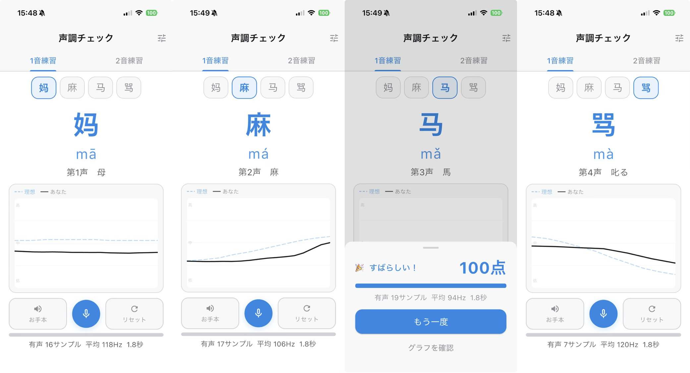
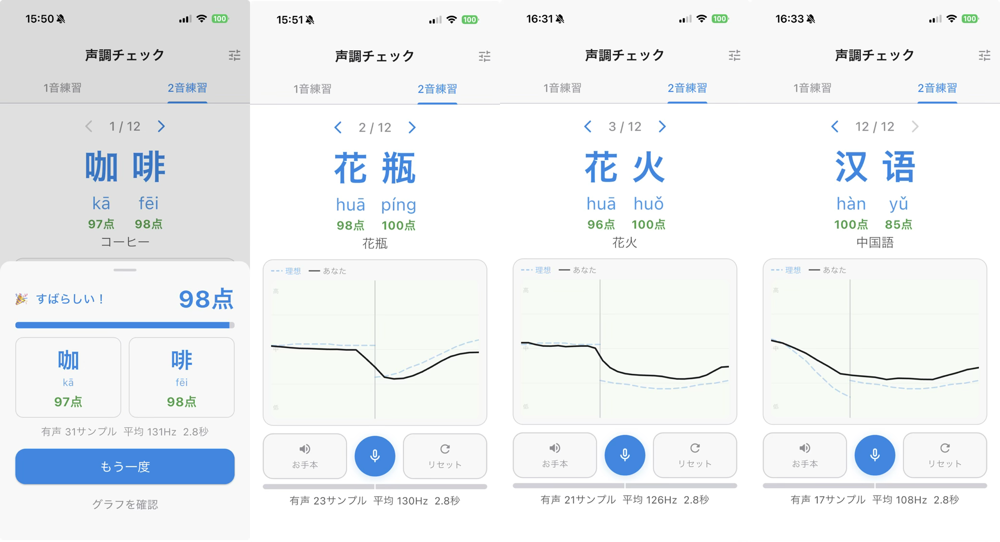
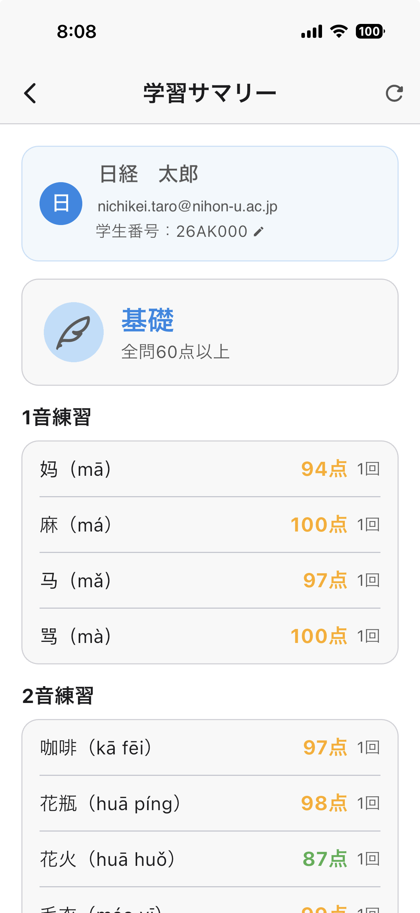

アプリの特徴
- ma の音で四声の練習ができます。
- 発音の状況がグラフ化されるので、自分の声調の変化をイメージしながら練習ができます。
- 発音しやすい単語で、２音連続の練習ができます。
四声の練習画面

- グラフを見ながら声調の練習ができます。
- 普通よりゆっくり発音して、声調がコントロールできるようになるよう練習しましょう。
２音練習の画面

- １音ずつ発音できるようになっても、慣れないうちは四声が連続すると発音できなくなってしまう人が少なくありません。
- そこで、２音連続する音声の練習をします。
- 練習する単語は、中国語独特の難しい発音はありませんから、発音に気を取られることなく、正しい声調で発音することに集中できます。
- 画面下に表示されるプログレスバーに合わせて１音目と２音目を発音してください。
学習サマリーの画面

- 学習サマリーで学習状況を確認できます。
- 練習問題ごとの最高点、練習回数が表示されます。
- 練習状況に応じてバッヂが表示されます。